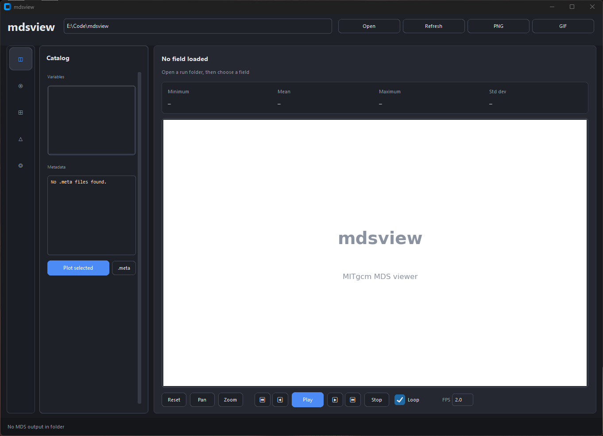

Install
pip install mdsview # CLI (headless) pip install "mdsview[gui]" # + desktop GUI
Requires Python 3.9+, NumPy, matplotlib, MITgcmutils, cmocean, Pillow, and netCDF4 (for export).
Quick start
mdsview info -d /path/to/run mdsview plot -v T -i 480 -l 4 -d /path/to/run mdsview plot -v T -i 480 -l 4 --save-figure t.png --no-show mdsview gui -d /path/to/run
-d is the run directory. -v is the field name (T, S, Eta, …).
Run mdsview COMMAND --help for options.
CLI highlights
# Diff two snapshots (one level at a time) mdsview diff -v T --later 2520 --earlier 0 -l 20 --plot --no-show # Cross-run diff (later -d, earlier --dir-b) mdsview diff -v T --later 2520 --earlier 2520 -l 20 -d /warm --dir-b /ref # NetCDF export (T and S must share the same MDS shape) mdsview export -v T,S -o run.nc --iterations all --levels 0 # Subset to a smaller MDS folder mdsview extract -v T -o subset/ --iterations 0:1200:120 --levels 0:10 # Time series with plot + CSV mdsview timeseries -v T -l 4 --iterations all --at 40,30 -o point.csv
GUI

Features
- Catalog runs from
.metafiles only (safe on huge directories) - Plot 2-D slices with XC/YC coordinates
- Diff snapshots from the CLI, including cross-run (
--dir-b) - Export to NetCDF with CF-style coordinates (
mdsview export) - Subset runs to new MDS files (
mdsview extract) - Point, box, and domain time series with plots (
mdsview timeseries) - Headless PNG export for HPC batch jobs
- Synthetic sample data via
generate-sample
Sample data
mdsview generate-sample -o sample_data --preset demo
The repository includes a bundled sample/ directory for quick tests.